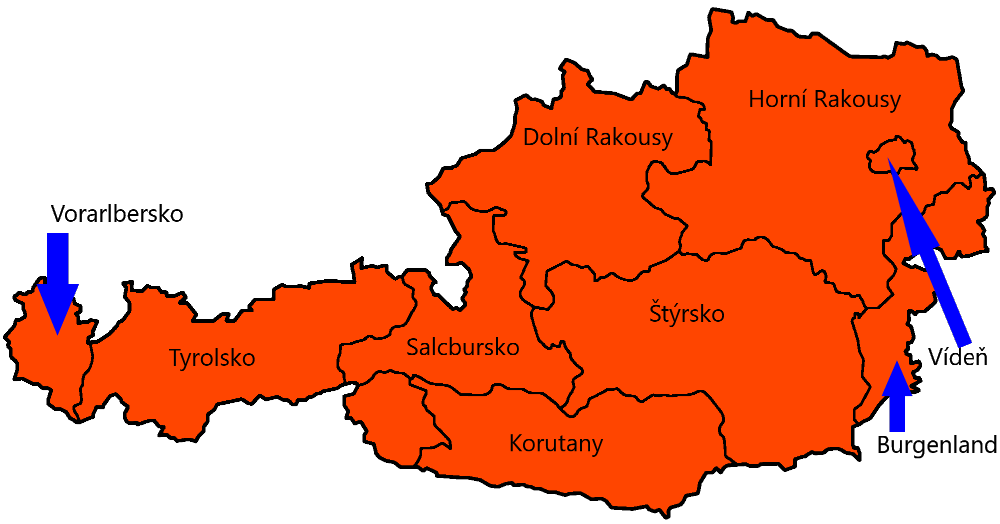
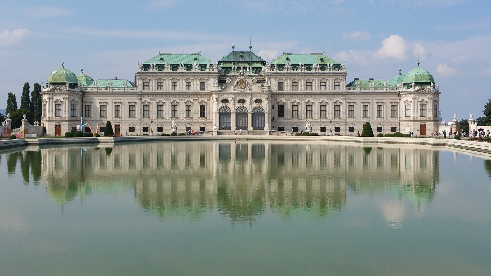
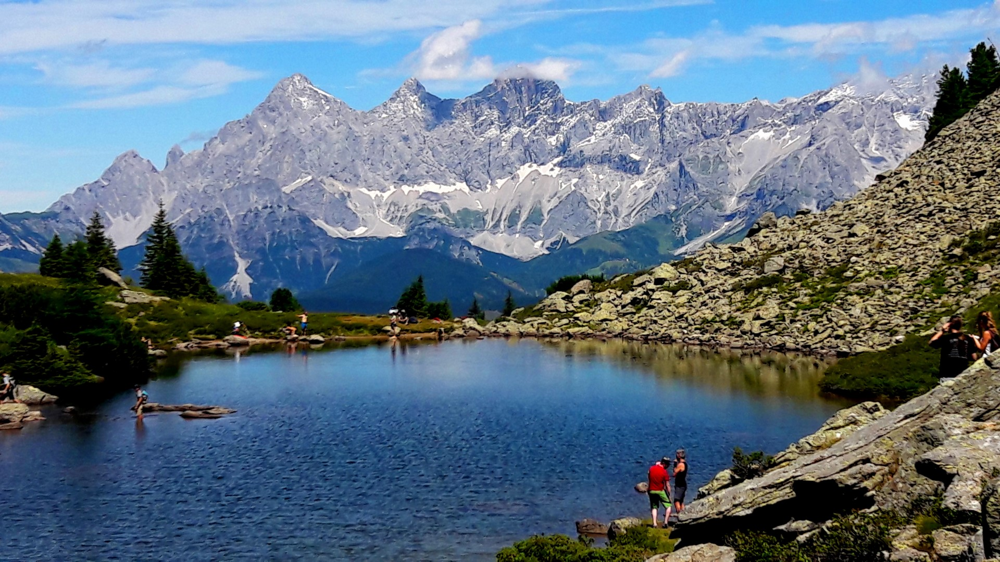

Základní info
Rakousko, plným názvem Rakouská republika (německy Republik Österreich), je vnitrozemská spolková republika ležící ve střední Evropě. Skládá se z devíti spolkových zemí. Hraničí s Lichtenštejnskem a Švýcarskem na západě, s Itálií a Slovinskem na jihu, s Maďarskem a Slovenskem na východě a s Českem a Německem na severu. Jejím hlavním městem je Vídeň. Dalšími velkými městy jsou Štýrský Hradec, Linec, Salzburg a Innsbruck. Rakousko je značně hornatou zemí, horská území zaujímají 60 procent jeho plochy. Nížiny se nacházejí zejména kolem Dunaje, největší rakouské řeky.Geografie
Rakousko se rozkládá v jižní části střední Evropy, v délce 575 km ve směru západ-východ a 294 km sever-jih. Jeho území, o trochu větší než Česko, má charakteristický tvar obrácené křivule, s protaženým hrdlem na jihozápadě. Přibližně 60 % země je hornaté povahy. Rakousko zahrnuje většinu Východních Alp (jmenovitě Tyrolské Střední Alpy, Vysoké Taury a Nízké Taury, Severní vápencové Alpy, Jižní vápencové Alpy a Vídeňský les, na hranicích Karnské Alpy a Karavanky). V Horních a Dolních Rakousech, severně od Dunaje, leží jižní okraj starého pohoří Českého masivu, které zasahuje dále do Česka a Bavorska. Na severovýchod zasahují okrajem Západní Karpaty. Nížiny leží na severovýchodě podél Dunaje (především Alpské předpolí a Vídeňská pánev s Moravským polem), ale i na jihovýchodě ve Štýrsku, které je pro podobnost své krajiny s italským Toskánskem nazýváno také Štýrská Toskána. Z celkové plochy Rakouska (83 871,1 km²) připadá na pahorkatiny a nížiny přibližně jedna čtvrtina. Pouze 32 % leží níže než 500 m n. m. a 43 % rozlohy je zalesněno. Nejníže položené místo je poblíž hranice s Maďarskem u Apetlonu (okres Neusiedl am See – Burgenland) 114 m n. m. Naproti tomu nejvýše položeným místem je vrch Grossglockner (3798 m n. m.). Celková délka státní hranice: 2832 km, z toho s Německem 784 km, s Českem 362 km, s Itálií 430 km, Maďarskem 366 km, Slovinskem 330 km, Švýcarskem 164 km, Slovenskem 91 km a s Lichtenštejnskem 35 km. Údolí Kleinwalsertal, které patří k spolkové zemi Vorarlbersko, je na základě polohy dostupné po silnici pouze z Německa a je tak funkční enklávou Německa. Obdobně obec Jungholz. Na druhé straně existuje i funkční enkláva Rakouska, která patří ke Švýcarsku. Obec Samnaun nebyla po dlouhou dobu spojená se Švýcarskem jakoukoli cestou, nýbrž přístupná pouze přes Tyrolsko. To vedlo k tomu, že odtud vymizela rétorománština a místo ní přijali tamní obyvatelé dialekt podobný tyrolskému. Mezitím byla postavena silnice vedoucí do Samnaun, která se již ubírá výhradně po švýcarském území, která už zde kdysi byla zavedena. V podobném stavu jako Samnaun byla až do roku 1980 obec Spiss na rakousko-švýcarské hranici. Byla po dlouhou dobu dosažitelná pouze přes Samnaun a bojovala se silným odchodem obyvatel, protože oproti ostatním enklávám měla velmi malé možnosti hospodářského rozvoje. Rakouské klima je označováno za smíšení oceánského a kontinentálního klimatu, resp. panonské klima. Díky zvláštnostem těchto podnebí je východní Rakousko známé mrazivými zimami a horkými léty s celoročně nízkými srážkami. Západ země podléhá zpravidla méně silným podnebním podmínkám, a tak jsou zimy většinou mírnější a léta spíše teplá. Leží zde také oblasti bohaté na srážky. Z geografických podmínek vychází další klimatická zóna, a to alpínské klima, které způsobuje v horách silnější zimu než na hlouběji položeném východě. Další zajímavostí jsou občasné severní a jižní větry, které jsou na jedné straně polárně ledové a na straně druhé s sebou někdy přinášejí saharský písek. Díky tomu se Rakousko zcela oprávněně řadí k středoevropskému přechodovému klimatu, s ohledem k Alpám ve středu a na západě a k Panonské nížině na východě země.
Tabulka
| Ukazatel | Hodnota |
|---|---|
| Rozloha | 83 879 km2 |
| Počet obyvatel | 8 859 449 |
| Hlavní město | Vídeň |
| Úřední jazyk | Němčina |
| Měna | Euro (€) |
Fotky


- Vyberte obrázek: